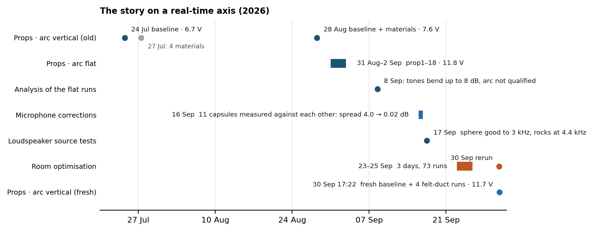
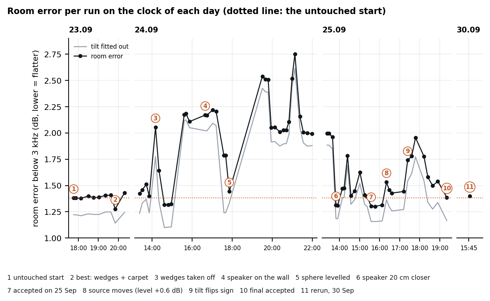
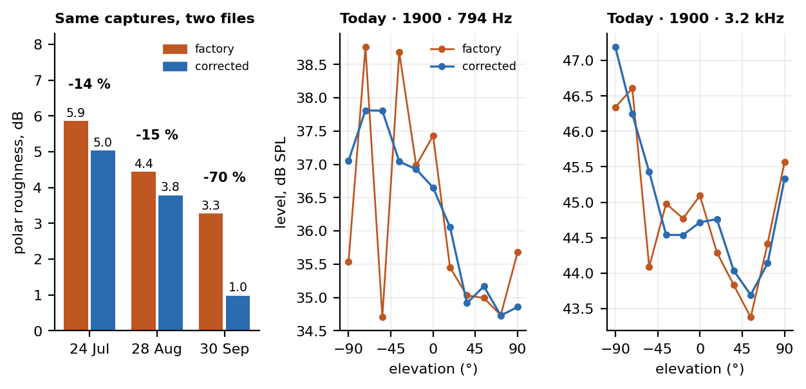
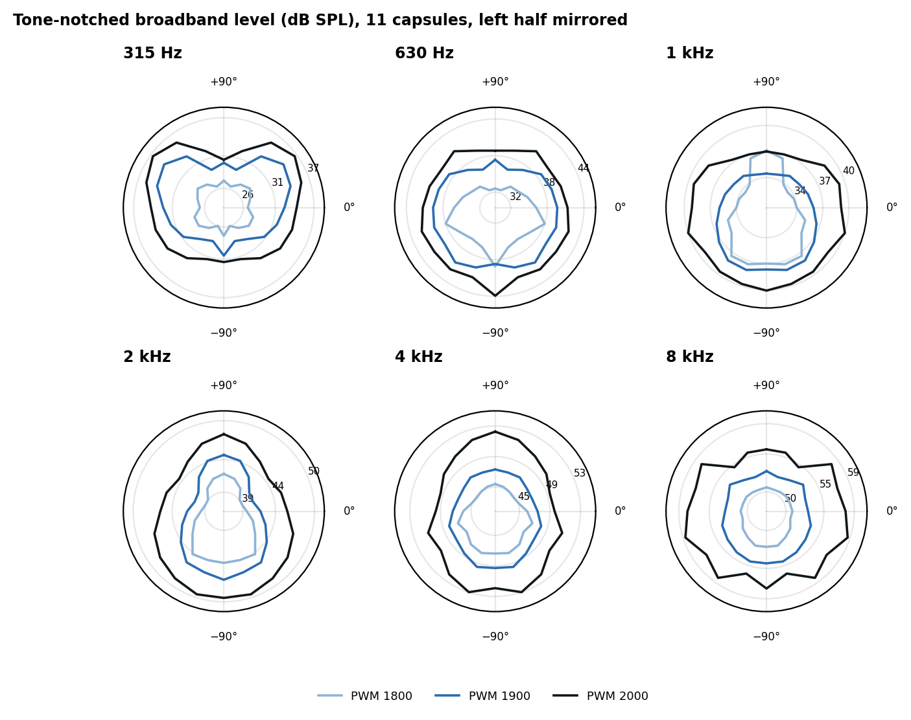
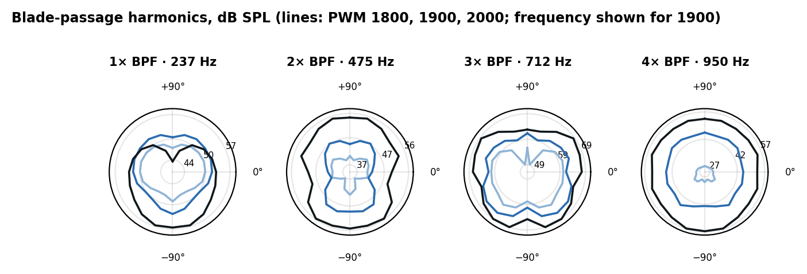
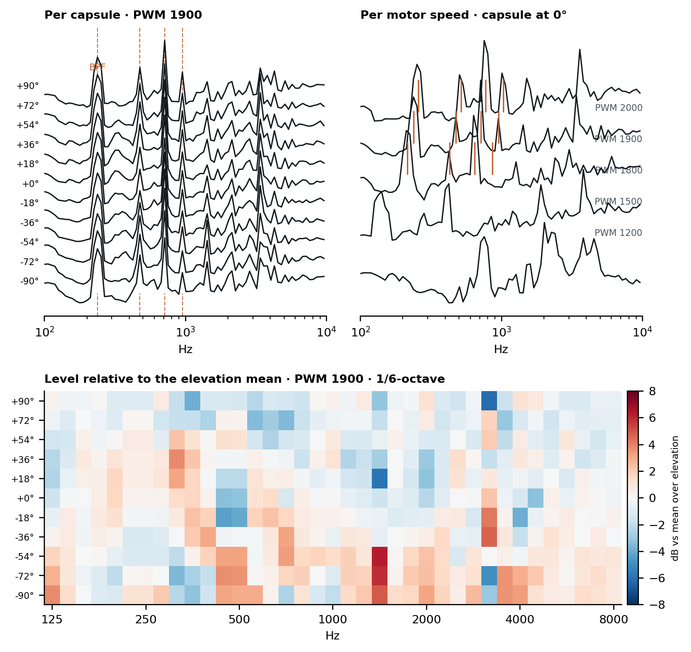
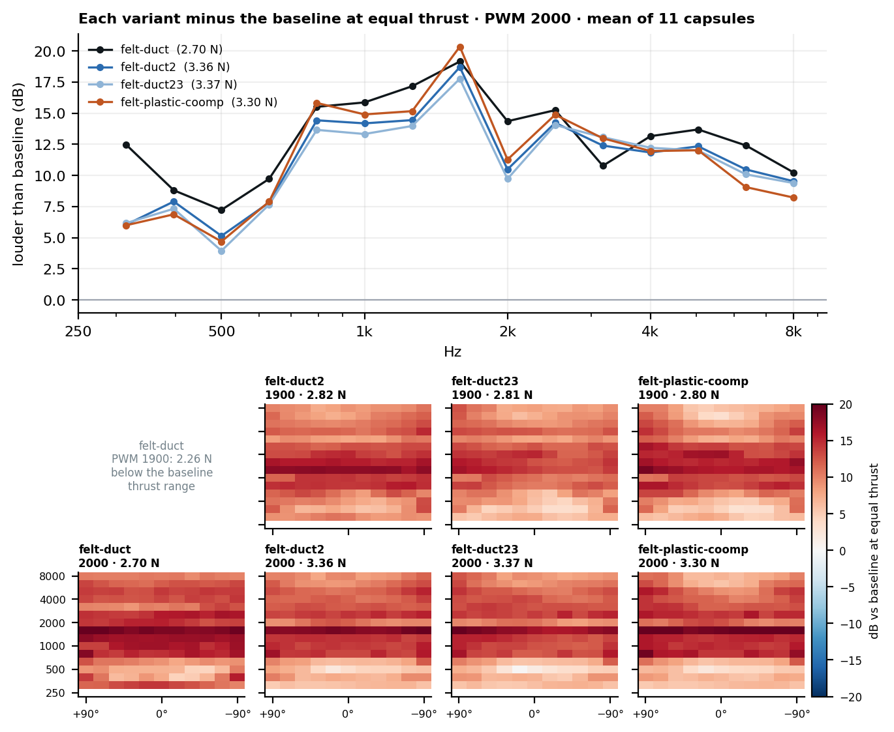

Did we get better? The story up to the fresh baseline
SoundVisualizer · 2026-09-30 · prop data from the Pi (5 bases, 324 measurements) · loudspeaker data from the chamber campaign · every number computed by build_report.py
00The answer
| Layer of the work | Did it get better? | Evidence |
|---|
Microphone corrections
16 Sep | YES | On the same captures, the polar of today's baseline is 70 % smoother with the corrected files than the factory ones (roughness 3.3 → 1.0 dB). The two old baselines gain 14 % and 15 %. Bench: spread across the 11 capsules 4.01 → 0.02 dB. |
Room optimisation
23–25 Sep | NO, net | Loudspeaker room error: untouched start 1.380, accepted state 1.387 (rerun today 1.399). With the source tilt fitted out: 1.221 → 1.165 (-5 %). The best state we ever measured, 1.277 (wedges + carpet, day 1), was taken apart. 400–630 Hz improved (1.67 → 1.52), 630–1000 Hz got worse (1.27 → 1.47). |
Fresh prop baseline
30 Sep 17:22 | VALID, not comparable to July/Aug | Same operating point as the September flat-arc runs (11.7 V, 5.8 A, BPF 237.5 vs 238.3 Hz). The July and August "baselines" ran at 6.6 and 7.6 V with the opposite thrust sign, so they cannot be the "before". |
| Room quality measured with props | CANNOT TELL YET | September's test was a flat arc, where every position must read the same. Today's arc is vertical, where the polar is real. To show a prop-level gain we need one flat-arc run in the accepted state. |

Real time, 2026. Each lane is one kind of work; bars span days, dots are single sessions. The fresh baseline (blue, bottom) is the first prop run after the microphone corrections and the room work.
Today in clock time (local): 15:43–15:48 loudspeaker rerun of the accepted state · 17:22 baseline, vertical arc, 5 motor speeds, 11 capsules, 2 idle steps repeated · 18:44 felt-duct · 18:49 felt-duct2 · 18:53 felt-duct23 · 19:01 felt-plastic-coomp. Each run takes 14 s.
01The room, in clock time

Loudspeaker room error for all 73 runs of the chamber campaign. Grey line: the same with each map's top-to-bottom tilt fitted out.
- The campaign reached 1.277 on day 1 (marker 2, wedges + carpet) and then went through a long excursion on day 2, when the wedges came off and the speaker went to the wall (markers 3–5). By the evening of day 3 it was back at 1.387, the score it started from.
- On day 3 the source moved twice (markers 8 and 9) and was never put back; the final state is judged with a different source position from the start. Fitting the tilt out is the fairest single number, and it says -5 %.
- Today's rerun (marker 11) reproduces the final state to 0.013 dB after five days.
02Is the fresh baseline comparable with anything?
| Baseline | V | I (A) | Thrust (N) | BPF at PWM 1900 | Note |
|---|
| 24 Jul vertical | 6.60 | 8.20 | +3.86 | not reliable | supply sagging; thrust sign opposite |
| 28 Aug vertical | 7.58 | 9.14 | +4.20 | not reliable | supply sagging; thrust sign opposite |
| 2 Sep flat, prop15 | 11.73 | 5.84 | -3.40 | 238.1 Hz | the September campaign |
| 2 Sep flat, prop17 | 11.73 | 5.82 | -3.39 | 238.2 Hz | |
| 30 Sep vertical, fresh | 11.72 | 5.82 | -3.38 | 237.5 Hz | same operating point as September |
Median telemetry and the blade-passage frequency read from the audio at PWM 1900. The detector gives an erratic, non-monotonic BPF for the two old baselines, so none is shown.
Cross-check with September. The 0° capsule of today's vertical arc sits at the same polar angle to the prop axis as every position of the flat arc, so its levels should match September's mean.
| Level at PWM 1900 | Sept flat, mean | Sept flat, range (4 runs) | Today, 0° capsule | Today, mean over elevation |
|---|
| 1× BPF | 51.5 | 51.2–52.0 | 51.9 | 51.5 |
| 2× BPF | 49.4 | 48.7–50.4 | 42.6 | 46.0 |
| 3× BPF | 63.0 | 62.9–63.2 | 61.4 | 62.7 |
| 4× BPF | 51.8 | 51.4–52.2 | 45.3 | 45.2 |
Blade-passage harmonics, dB SPL, corrected calibration.
- 1× and 3× BPF match (within 0.4 and 1.6 dB), and 3× BPF (712 Hz) dominates both, 10–12 dB above the fundamental. It is a property of this source, not new.
- 2× and 4× BPF are 6–8 dB lower today at the 0° capsule (42.6 vs 49.4, 45.3 vs 51.8). Those two frequencies (475 and 950 Hz) sit in the 400 and 800 Hz bands that fail the room test. The room changed and so did the arrangement, so this cannot be attributed; it is the kind of change tones show when the room moves.
- Broadband at the 0° capsule lies inside September's spread of four runs (1 kHz: 35.9 vs 32.6–36.0 dB; 3.2 kHz: 44.7 vs 43.1–45.4 dB).
03The microphone corrections, tested on the same captures

Roughness = rms second difference of the tone-notched broadband level across the 11 elevations, averaged over the 250 Hz–8 kHz bands at PWM 1900. A true polar is smooth; a capsule error is a kink. Right: today's 794 Hz and 3.2 kHz polars with each file set.
- The test needs no matching operating point, because only the calibration file changes. Every baseline improves, today's most (3.3 → 1.0 dB).
- The old baselines stay rough (5.0 and 3.8 dB) after the correction. That roughness is not the microphones; it comes with the 6.6–7.6 V operating point and whatever else differed then.
- The corrections are on the Pi (same checksums as the repo), so today's captures were read with them by the server as well.
04Patterns in the fresh baseline

Polar plots use the project's clock-face convention: +90° up, 0° right, −90° down; the measured right half is mirrored.
- The bottom of the arc is louder than the top from 500 Hz to 2 kHz, by 2.9–2.6 dB, and by 1.2–1.7 dB above that. At 315 Hz it reverses (top louder by 2.0 dB).
- Part of that may be the room rather than the prop: with the loudspeaker, the accepted state has a bottom-louder tilt of about 1.3 dB top to bottom at 400 Hz–3 kHz.
- The shape of the polar depends on motor speed, except at 1.3–2 kHz. Between PWM 1800 and 2000 it is stable there (correlation 0.96 or better, shape change 0.6 dB at most). In the other bands the shape changes by 0.8–2.2 dB rms. Level still rises at every angle.

Harmonics grow faster with speed than broadband does, so each panel has its own radial scale.
05Waterfalls

- Left: the same tone stack, in the same places, at every elevation; the capsules agree on the spectrum's shape. Right: the tones track motor speed, and at PWM 1200 and 1500 there is no blade tone (idle and spool-up), with a steady ~2 kHz motor whine at idle.
- Bottom: what differs between capsules is localised. The warm block at ~1.5 kHz on the bottom capsules (−54° to −90°) and the pair of columns at 3.2 kHz with opposite signs at top and bottom are fixed-frequency structures, the kind a reflection or a capsule position produces, not a smooth directivity.
06The four felt-duct runs against the baseline

- At equal thrust every variant is 10–13 dB louder than the open prop across 250 Hz–8 kHz, with a peak of +18 to +20 dB at 1.6 kHz and a minimum (+4 to +7 dB) near 500 Hz. The effect is nearly uniform with elevation (within ±2 dB).
- Thrust at the same PWM is 16–19 % lower for three variants and 31–34 % lower for the first one. The blade-passing frequency does not move.
- The 1× BPF tone is unchanged (within 4 dB) while 4× BPF rises by 15–19 dB at PWM 1900.
- This agrees in sign with Malgoezar et al. 2019 (static duct louder everywhere, up to +12 dB) but is larger. It is also not a level artefact: at idle (PWM 1200) the ducted captures are not louder than the baseline at high frequency.
- Repeat floor. felt-duct2 and felt-duct23 draw the same current and thrust (to 0.3 %) yet differ by 2.2 dB rms (PWM 1800 and 1900: 2.2) and 1.0 dB (PWM 2000) in the band levels, and by 3.3–4.4 dB in the tones. If they are the same state, that is this rig's repeat floor; the duct effect is five times larger. One idle capture (felt-duct23, PWM 1200) carries a noise burst 30+ dB above the others and is not used.
07What we can and cannot say
- Can: the corrected microphones make the polar smoother; today's baseline is a valid fresh reference at the September operating point; a felt duct is much louder than the open prop at equal thrust in a static test.
- Cannot: show that the room is better for props. The loudspeaker headline did not move, the source moved during the campaign, and the only prop test that measures room quality is the flat-arc one.
- Repeat floor unknown for the open prop. The only repeats at spinning speeds are the two duct runs above; the repeated 1200 and 1500 steps of the baseline are idle noise and say nothing.
- The July and August baselines are not evidence for or against anything about the room.
Next, in order of value: (1) one flat-arc prop run in the accepted state, same protocol as prop15–18 (5 PWM steps), then the same error-map fit as in September: that answers "better than before" directly. (2) Repeat one spinning step of the baseline three times, to get a real repeat floor. (3) Say what the four felt-duct runs are (names as typed: felt-duct, felt-duct2, felt-duct23, felt-plastic-coomp) and whether duct2 and duct23 are meant to be identical. (4) Extend the loudspeaker grid below 257 Hz: the blade tone is at 215–258 Hz and sits below what the room test covers.
Sources: prop captures on the Pi (~/SoundVisualizer/data, 5 bases) and the measurement repo; loudspeaker sessions calibrator/sessions/2026-09-23…30; calibration files data/calibrations and factory-originals-2026-09-16. Evidence for the duct comparison: Malgoezar et al. 2019, Int. J. Aeroacoustics 18, p. 9 (papers/SoundVisualizer/design-rules/EXTRACTS-DUCT-LINING.md).